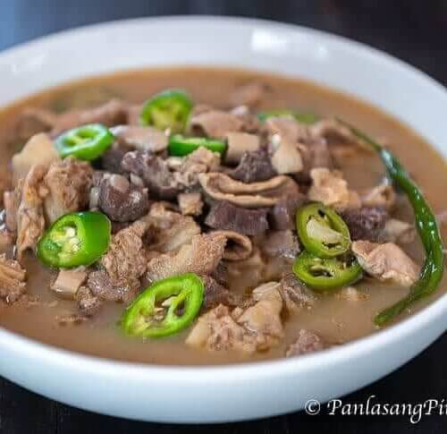

Papaitan

Description
Traditional Filipino bitter soup made from cow’s innards. This is a special delicacy in the Northern part of the Philippines.
Prep: 45minutes minutes
Cook: 1hour hour 30minutes minutes
Ingredients
- 1 lb beef heart cubed
- 1 lb beef small intestine cleaned
- 1 lb beef tripe cleaned
- 1/2 lb beef liver cubed
- 1 lb beef kidney cubed
- 22 grams Knorr Sinigang sa Sampaloc Mix
- 1 piece onion chopped
- 3 thumbs ginger minced
- 5 cloves garlic crushed
- 3 piece long green pepper sliced
- 8 cups water
- beef bile to taste
- Salt and pepper to taste
- 3 tablespoons cooking oil
Steps
- Wash beef tripe and small intestine. Boil with ginger and dried bay leaves for 45 minutes. Remove from the pot and let it cool down. Slice into bite-size pieces.
- Heat oil in a pan. Sauté onion, garlic, and ginger until onion softens.
- Add beef heart and kidney. Sauté until it turns light brown.
- Put the tripe and small intestines into the pot. Cook for 2 minutes.
- Pour water into the pot. Let is boil. Adjust heat to low. Continue boiling until beef heart and kidney tenderizes.
- Add beef liver and bile. Stir. Cook for 15 minutes in medium heat.
- Add Knorr Sinigang sa Sampaloc Recipe Mix.
- Put long green peppers into the pot and season with salt and ground black pepper. Stir. Cook for 2 minutes.
- ransfer to a serving bowl. Serve hot.